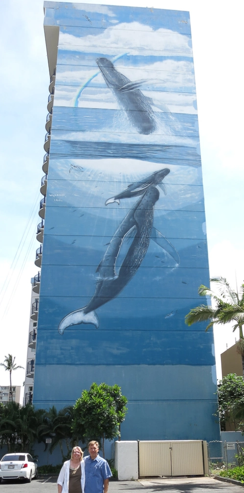

In Search of Wyland Walls

I had done a little less research on the walls in Honolulu than those on Kauai but figured I had a good idea where to start. We saw the first wall on the way to the hotel from the airport although we will need to go back there to get our picture in front of it.
For Earth Day Hawaii though, we could just walk to it from our hotel. Of course, I did not manage to take the direct route and our path there was 3 times longer than it needed to be but we found it.
With both this and the walls on Kauai we’re pretty happy we are seeing them now because they are fading significantly and it seems uncertain how much longer these walls will hold up.